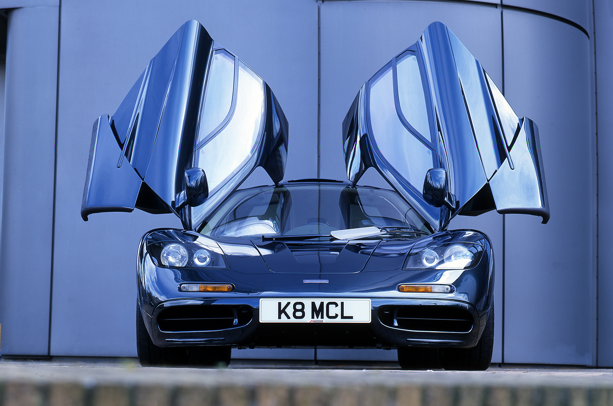
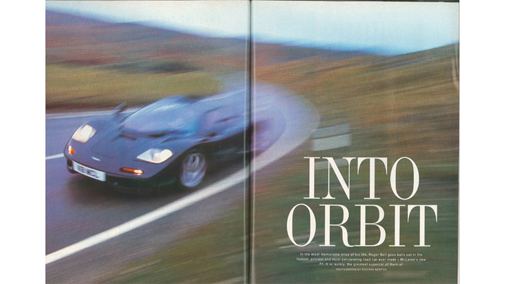
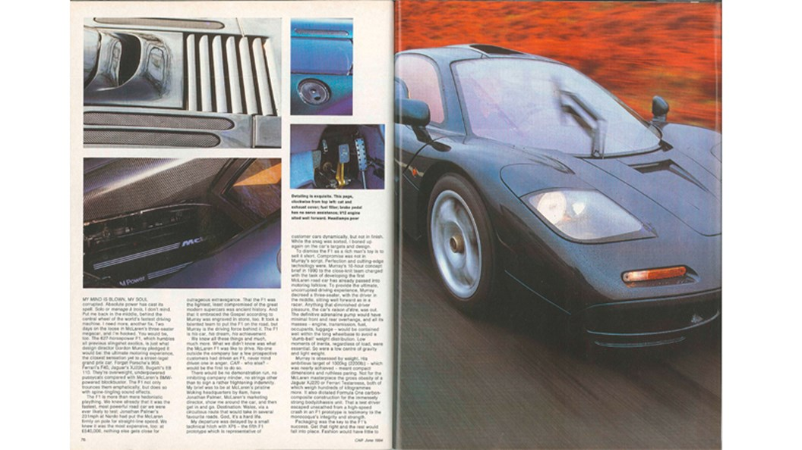
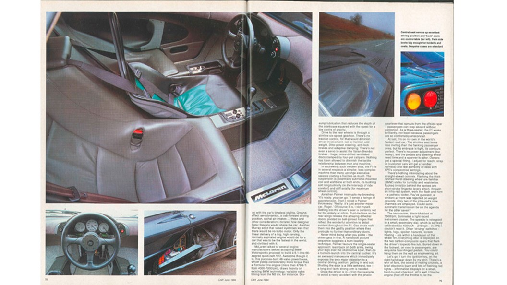
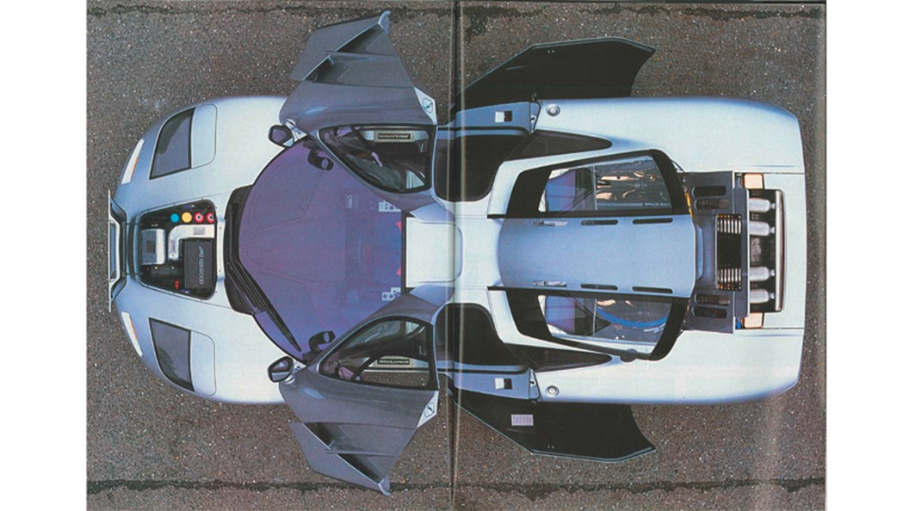
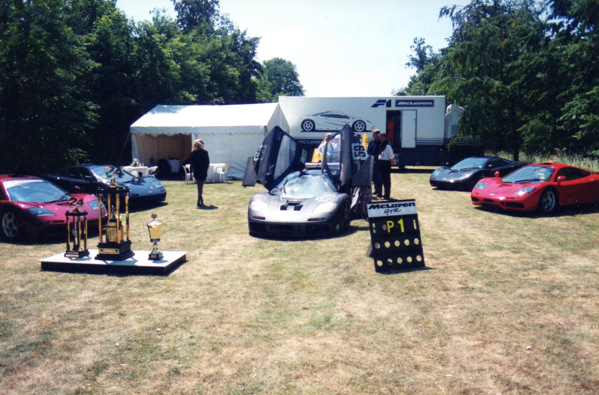
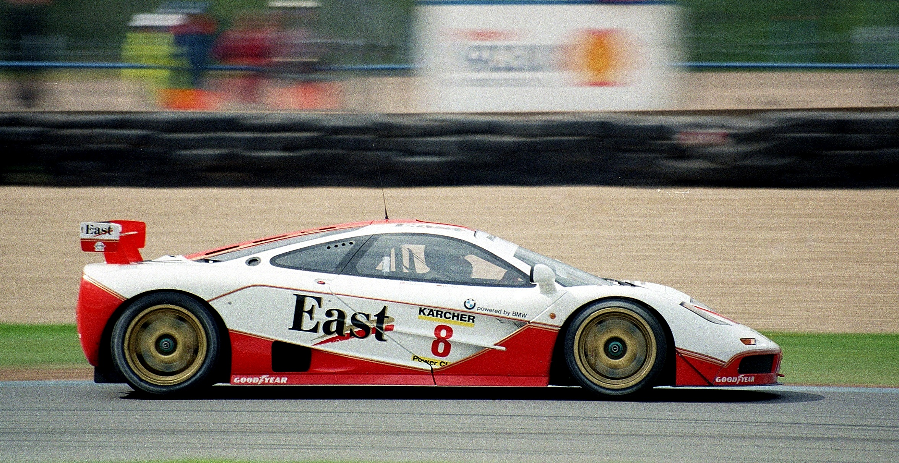

The written primary source for this gallery is Cropley, Steve. "McLaren F1: Full Test." Autocar, May 11, 1994.1
Tier 1
Primary Source Artifacts




Tier 1
Secondary Source Artifacts




Tier 2
Magazine & Press Coverage





Tier 2
Designers, Builders, and Owners


Tier 2
Design & Engineering


Designed by Gordon Murray with the singular goal of making the greatest road car ever built. The F1 featured a central driving position flanked by two passenger seats, a gold-lined engine bay (for heat reflection), a BMW S70/2 V12 engine, and a carbon fiber monocoque chassis at a time when such construction was exclusive to Formula One. In 1998 a modified GTR variant set a production car speed record of 240.1 mph that stood for seven years.
Written by Steve Cropley, this was among the first comprehensive road evaluations of the McLaren F1 available to British readers. Original photography from the 1994 test, taken at various locations throughout the UK, shows the car in its first public road appearances. The images capture a machine that looked unlike anything else on public roads.
This car, designed by Gordon Murray, was something nobody had ever seen before. The goal was to connect Formula 1 racing to the analog peak of supercar engineering, and his design philosophy, a centralized driving seat and zero traction control, gave it something no other car had. Steve Cropley of Autocar recalled gathering in the Yorkshire Dales to drive it and sliding into the central seat, which confirmed Murray's claim that symmetrical seating was the ideal setup for a genuinely fast car. The test, run at Bruntingthorpe and Millbrook, recorded a 0-60 of 3.2 seconds and a top speed of over 230 mph. The tone throughout the article is reverent and awestruck, and the test photos show just how beautiful this car truly is.
Sources for This Gallery
Cropley, Steve. "McLaren F1: Full Test of World's Greatest Supercar." Autocar, May 11, 1994.
A road test written by Steve Cropley, published May 11, 1994, created to give British car enthusiasts a thorough evaluation of the car across all of its prototypes and performance capabilities. Original pictures from the test are visible, which can be included in the museum. Captures the car through the eyes of its first audiences.
View Source ↗Car Magazine. "McLaren F1 Review: Our Original 1994 Road Test." Car Magazine, June 1994.
References the McLaren F1 as a new vision of what a supercar could be. Gordon Murray's involvement sets the tone and provides rhetorical evidence for examining how remarkable the car was. Captures the reactions of contemporary observers and includes period data from Car Magazine, offering a full picture of the car in its moment.
View Source ↗Footnotes
- Cropley, "McLaren F1: Full Test."
- Cropley, "McLaren F1: Full Test."
- Cropley, "McLaren F1: Full Test."
- Cropley, "McLaren F1: Full Test."
- Cropley, "McLaren F1: Full Test."
- Cropley, "McLaren F1: Full Test."
- Cropley, "McLaren F1: Full Test."
- Car Magazine, June 1994 cover.
- Car Magazine, June 1994 McLaren F1 spread 1.
- Car Magazine, June 1994 McLaren F1 spread 2.
- Car Magazine, June 1994 McLaren F1 spread 3.
- Car Magazine, June 1994 McLaren F1 spread.
- Car Magazine, June 1994 McLaren F1 spread.
- Car Magazine, June 1994 McLaren F1 spread.
- Spycatcher58, 1995 Le Mans-Winning McLaren F1 GTR.
- Lee, McLaren F1 GTR, Nielsen and Bscher at Donington, 1995.
- CNN archival footage, Elon Musk Takes Delivery of His McLaren F1, 1999.
- CNN archival footage, Elon Musk Receives McLaren F1, 1999.
- CNN archival footage, Elon Musk Standing Beside His New McLaren F1, 1999.
- Lee, Gordon Murray in the Paddock at the 1996 Le Mans.
- Jay, 1996 McLaren F1 Chassis No. 63 Front End.
- Jay, 1995 McLaren F1 LM Engine Bay.